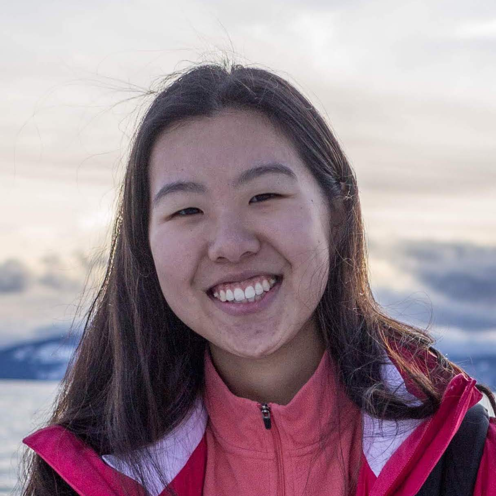

🏳️🌈 i'm a 2025 lambda fellow in the poetry cohort led by kay ulanday barrett! (august 2025)
🎨 for the next month, i'm transforming one of my poems into a website through welcome to my homepage's artist residency. (august 2025)
📖 i'm going to be reading some new poems at unnameable books with my friend rob to celebrate his debut poetry collection on saturday, may 31, 7pm! (may 2025)
🅰️ i'm a 2024 margins fellow at the asian american writers workshop! (april 2024)

i am a queer taiwanese poet, editor, and translator from the bay area. i recently graduated from stanford university where i studied english (poetry) & computer science (biocomputation). through the honors in the arts program, i wrote a zine of persona poems.
some things i'm thinking about: making crosswords, literature in translation, organizing & negative capability.
drop a line at khsu22@stanford.edu. 💌